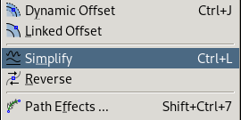
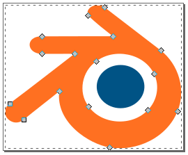

Vector icons for web-apps can be implemented using SVG inlined into CSS with data URLs. This can improve performance vs using separate .svg files by avoiding extra network requests, and can be a simple, zero-dependency alternative to font-based or template-based icon insertion.
Encoding
As serveral articles state (Stack Overflow, CSS-Tricks), certain characters must be URL-escaped and Base64 encoding is sometimes suggested as a workaround. For the payload of a data-URL however, only a subset of the usual characters reserved for URLs must be escaped. In many cases, escaping can be avoided altogether:
Use single-quotes for the surrounding url('') so double-quotes can be used for SVG tag attributes.
Use rgb() or color names like white or black instead of hex values to avoid the '#' character, which would otherwise need to be percent-encoded.
CSS supports multi-line strings by appending a line continuation character ('\') to each line. This can allow for nicely indented SVG snippets. With the formatting kept more readable like this, it can be practical to type out SVG syntax for simple graphics directly into the stylesheet.
If you can accept the default character encoding for data URLs (US-ASCII), you can omit an encoding declaration like ;utf8, thus further reduding the boilerplate for each graphic. For the limited use-case of simple paths and lines, the default character encoding is enough.
Note that the SVG xmlns attribute is required, but the version attribute is ignored by browsers and can be omitted.
Examples
These data URLs can be pasted directly into your CSS as a background-image
When creating more complex graphics or importing icons, I use a combination of Inkscape, SVGOMG and manual text editing to produce clean SVG markup suitable for inlining into CSS. Here's an example workflow using the Blender logo from Wikipedia:
This path has redundant vertices. The slightly smaller diamond-shaped handles indicate multiple verticies stacked onto the same position. If you click and drag you can pull out each one, revealing the duplication. It's a surprisingly common problem; possibly caused by conversion from one vector format to another.
There's also more verticies than necessary for the circular shapes; only four are needed per circle.

Inkscape's 'Simplify' path command can automatically clean up redundant verticies.
There's still a few redundant verticies that can be manually removed, after which the Bézier handles will need to be tweaked to ensure the overall shape is preserved.

Now it's quite tidy. If the logo were to be displayed at a very small scale, it could be simplified even further. In any case, the filesize will be small and it'll be as efficient as possible for the browser to render.
Save it as an "Optimized SVG" so it doesn't include any Inkscape-specific metadata which can be quite verbose. Several useful optimizations to reduce filesize further are enabled by default.
There's an option to limit the number of significant digits for coordinates, but I suggest leaving this at the default value and doing precision reduction in a separate step where you can visualize the result.
I use Jake Archibald's SVGOMG to visualize the result of applying precision reduction. You can find the optimum point before your paths become potato.
The additional optimization passes performed by SVGO may further simplify the SVG markup.
Here's the output from SVGOMG. It's pretty concise, but it needs a bit more cleaning before it can be inlined into a data URL.
The following manual edits were made to produce this final data URL:
Add line breaks with line continuations ('\').
Remove width/height attributes, as an intrinsic size isn't needed when the background-image is sized relative to the parent element. The viewBox determines the bounds of the svg.
Convert hex colors to rgb() to avoid the '#' character, which would otherwise need to be percent-encoded.
Remove the stroke-width attribute, as stroke already defaults to "none".
Every major browser rendered the stress-test correctly, except IE: it requires full URL-encoding in the data URL. Given this, I'd say unencoded inline SVG is suitable for web apps that already require a modern browser, but not suitable where maximum compatiblity is a requirement, like a government website.
Compared to JS-based SVG insertion
I've seen several Javascript-based methods of inlining vector icons into web apps, such as defining custom helpers for JS templating systems or using a React component to re-use SVG <symbol> elements. Icon insertion methods that use Javascript to create 'real' SVG DOM elements can have disadvantages though:
Reduced accesibility and SEO performance due to non-semantic SVG elements in DOM.
Obscures more important elements when inspecting/debugging live DOM.
The same SVGs can end up being parsed multiple times by the browser if the icon is reused on multiple elements.
Reduces HTML renderer performance by increasing the number of elements considered for CSS selection, hit-testing etc.
Reduces javascript performance with extra interaction with the DOM API.
Defining icons in pure CSS can allow for clean, semantically-correct HTML that's pleasant to inspect/debug, and minimizes performance bottlenecks.
Compared to font-based icons
Font Awesome, for example, provides a multitude of icons packaged as web fonts. It's easy to integrate and there's a wealth of customizations, but there's still a few disadvantages vs this pure-CSS solution:
Separate network request for font
Not easily edited
Requires pseudo-elements to contain the special characters
Gotchas and limitations
Color themes can't be applied.
No error feedback for incorrect SVG syntax or improperly escaped data URLs